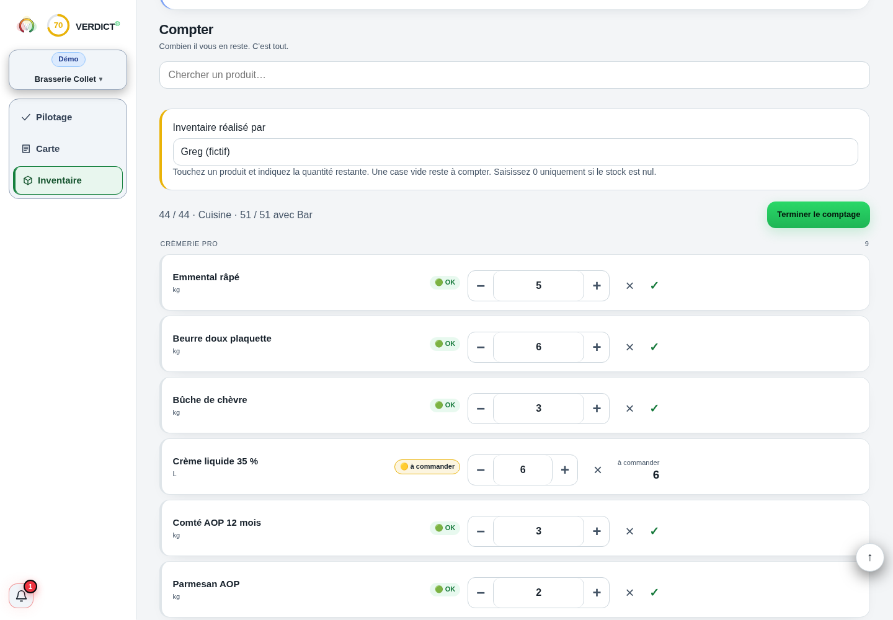

FAO · mesure des pertes alimentaires
Ressources de mesure et de prévention. Aucun montant d’économie garanti pour votre établissement.
Document consulté le 18 septembre 2026. Cette référence ne valide pas les données de votre établissement.Comprendre le sujet
Fixez un instant de coupure, parcourez les zones dans un ordre stable et comptez chaque produit dans une unité définie.
Fixez un instant de coupure, parcourez les zones dans un ordre stable et comptez chaque produit dans une unité définie. Valorisez ensuite les quantités selon une méthode constante. Le comptage décrit ce qui reste ; ce sont les achats et les deux stocks de période qui permettent de retrouver la consommation.
LES POINTS QUI CHANGENT LA LECTURE
Des repères à appliquer dans votre établissement. Le détail reste accessible, sans perdre le fil.
Créez une ligne par référence, avec son emplacement, son unité et le facteur de conversion du colis. Une caisse de six bouteilles n’est ni six litres ni six kilos. Séparez cuisine, bar, emballages et entretien pour pouvoir retrouver le périmètre voulu.
Choisissez une heure de coupure. Si une livraison ou une sortie survient pendant le comptage, notez-la avec son heure : deux personnes peuvent compter un même produit de part et d’autre du mouvement et créer un faux écart.
Pesez ou mesurez les contenants ouverts lorsque c’est possible, en déduisant la tare. Une bouteille estimée à 0,7 puis à 0,8 ne donne pas la même valeur. Si l’estimation est nécessaire, notez sa précision et gardez la même méthode.
Recensez les préparations encore disponibles sans compter deux fois leurs ingrédients. Distinguez stock utilisable, produit à contrôler et perte déjà constatée. Une quantité vide reste « non comptée » ; saisissez zéro uniquement après vérification.
Recomptez les lignes importantes puis cherchez une conversion erronée, une réception non enregistrée ou une sortie de production. Corriger directement le stock masque la cause. Conservez l’ancienne valeur, le nouveau comptage et le motif de correction.
Le coût de gestion doit rester cohérent entre deux inventaires. Pour la valeur comptable et sa méthode, rapprochez votre inventaire des règles retenues avec votre comptable. La fréquence de comptage dépend du risque de rupture, de la valeur et des mouvements : il n’existe pas ici de fréquence universelle démontrée.
LE LABORATOIRE
Modifiez les données, observez le résultat, puis vérifiez ce que le calcul permet de conclure.
UN SCÉNARIO, JUSQU’AU BOUT
Le calcul, jusqu’au bout
Les 12 € d’écart ne prouvent pas une perte : commencez par vérifier la quantité attendue et les mouvements.
Exemple fictif · hypothèses modifiables
| Stock compté | 148 € |
|---|---|
| Écart de quantité | -1,5 unités |
| Écart valorisé | -12 € |
Les montants sont arrondis pour la lecture.
Les calculs gardent leur précision.
C’est utile pour séparer comptage et saisie, mais ce n’est pas une obligation de cette méthode. Un recomptage indépendant des lignes sensibles peut aussi sécuriser le résultat.
Vous mesurez alors des achats. Sans variation de stock, vous ne pouvez pas affirmer que ces achats correspondent à la matière consommée pendant la période.
Ressources de mesure et de prévention. Aucun montant d’économie garanti pour votre établissement.
Document consulté le 18 septembre 2026. Cette référence ne valide pas les données de votre établissement.Principes de manipulation sûre ; ne remplace pas vos procédures et obligations locales.
Document consulté le 18 septembre 2026. Cette référence ne valide pas les données de votre établissement.Recomptez trois références à fort enjeu et rapprochez leurs mouvements avant de valider l’ensemble.
DANS L’APPLICATION VERDICT

Capture réelle de Verdict — démonstration fictive Brasserie Collet. Compter les quantités restantes.
Voir l’écran en grandInventaire réalisé par
Une case vide reste à compter
Emmental râpé
LES CHIFFRES NE VIVENT PAS SÉPARÉMENT.
Ventes, carte, inventaire : découvrez la lecture proposée par Verdict, avec vos données et vos hypothèses.